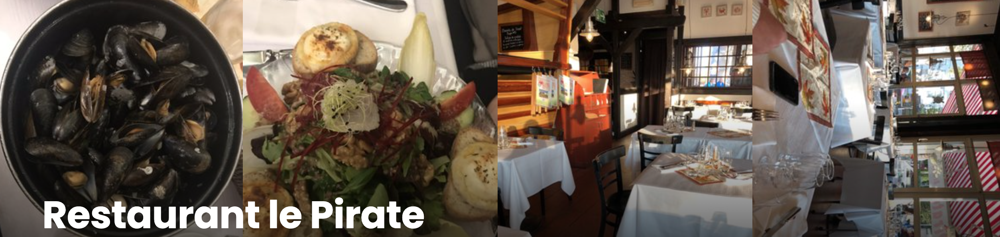
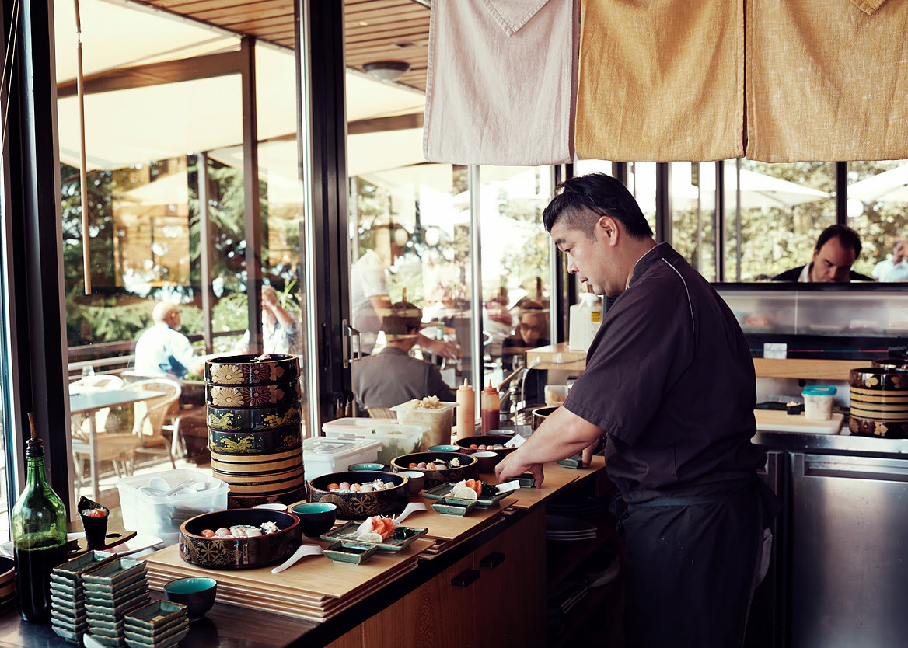

Did you know that you can navigate the posts by swiping left and right?
Restaurants in Lausanne - A Food Lover's Guide
04 Apr 2016
. category:
cuisine
.
Comments
#food
#restaurant
#Lausanne
#Switzerland
#French-cuisine
#Japanese
#Lebanese
#fine-dining
As an enthusiastic food lover, I'm always eager to try local dishes and find the best ones. During my three years living in Lausanne, the Swiss Olympic Capital, I've dined at various restaurants here. My friends encouraged me to make a list of the ones I'm fond of. Below are all based on my own taste, hope you find this useful 
Le Pirate (Permanently closed since 2021)

This nice little restaurant sat beside Lac Léman (never call it Lake Geneva in Lausanne LOL) in Ouchy. The most famous dish of Le Pirate was the mussels! They had around 8 different ways to cook them — you could try all sorts of combinations of seasonings and wines. During winter, they served Oysters from France and Italy. You could also find fresh fish (e.g. fillets de perches) and classic French food here. Sadly, Le Pirate closed permanently in 2021 — I still miss it.
Address: Place de la Navigation 4, Lausanne, Switzerland
MYO

This might be the best Japanese restaurant in Lausanne, at least in my opinion, and I've been there a lot of times. It's located at the east corner of Esplanade de Montbenon. The sashimi and sushi are fresh and tasty, and as a soup guy, the miso soup is always my go-to.
Address: Esplanade de Montbenon, Allée Ernest-Ansermet 1, CH — 1003 Lausanne
Lausanne Palace — La Table du Lausanne Palace
This is the place to go if you want to treat yourself. The Lausanne Palace is one of Switzerland's most iconic grand hotels, right in the heart of the city. It's been around since 1915, and unlike some secluded luxury hotels, this one sits right in the middle of everything — overlooking the Flon district and the Lémanic basin. Fun fact: it's long been the preferred residence of the International Olympic Committee presidents, so people call it the "Olympic" hotel.
I'd highly recommend the Menu Au Gré des Envies at La Table — it's basically a blind tasting journey where the chef decides what to serve based on the freshest market finds that morning. I had a beautifully prepared Féra caught from the lake, with a modern sauce that was intense and clean rather than heavy. Definitely a special-occasion kind of meal 
Address: Grand-Chêne 7-9, 1003 Lausanne, Switzerland
Mövenpick Brasserie Petit Chêne
Another lakeside gem in Ouchy! The Mövenpick Brasserie gives you that classic Parisian brasserie vibe — warm wood paneling, brass accents, leather seats — but with a Swiss twist. The menu sticks to what it does best: French and Swiss classics. I love the lake-caught perch fillets sautéed in butter, and the beef tartare prepared tableside is always a solid choice. The entrecôte with herb-infused sauce is great too. It feels like a grand hotel dining room and a cozy neighborhood spot at the same time, which is a rare combo.
Address: Avenue de Rhodanie 4, 1007 Lausanne, Switzerland
Keyann Bistro Libanais
If you're craving Lebanese food in Lausanne, Keyann is the answer. It's in the Ouchy district near the lake, and the food is seriously authentic. The meze selection alone is worth the trip — silky hummus, baba ghannouj, hand-stuffed vine leaves — I could honestly fill up on just those. But you'd be missing out on the grilled meats: the Beef Shawarma, Chich Taouk (marinated chicken skewers), and Kafta are all packed with flavor. They also do great plant-based options, like crispy falafels with tarator sauce and their signature Keyann Potatoes with coriander, garlic, and lemon. A must-try!
Address: Avenue d’Ouchy 18, 1006 Lausanne, Switzerland
Restaurant Eat Me
This one is unlike anything else in Lausanne. Eat Me calls itself "The World on Small Plates" and that's exactly what it is — the menu is organized by region (Europe, Asia, the Americas, Middle East & Africa) and everything is meant for sharing. It's basically a world food tour on your table. Some of my favorites: the grilled octopus with Afro-Indian tikka masala, Shrimp Lollipops with yuzu-miso yogurt, and the New Age Gyoza stuffed with marinated veal brisket and pineapple chutney. If you're feeling adventurous, try the Electric Sashimiviche — tuna sashimi with Sichuan button flowers and grapefruit. They also have plenty of vegetarian, vegan, and gluten-free options, so it's perfect for a group with mixed dietary preferences 
Address: Rue Pépinet 3, 1003 Lausanne, Switzerland

Xin is a Researcher specializing in AI4 (Life) Science, Machine Learning and Computer Vision. He currently resides in Shanghai, China, and has previously studied and worked in Switzerland, Germany and the UK. In his leisure time, Xin enjoys drinking coffee and indulging in Swiss chocolate. Additionally, he is an amateur badminton and basketball player, with Stephen Curry being his favorite basketball player.